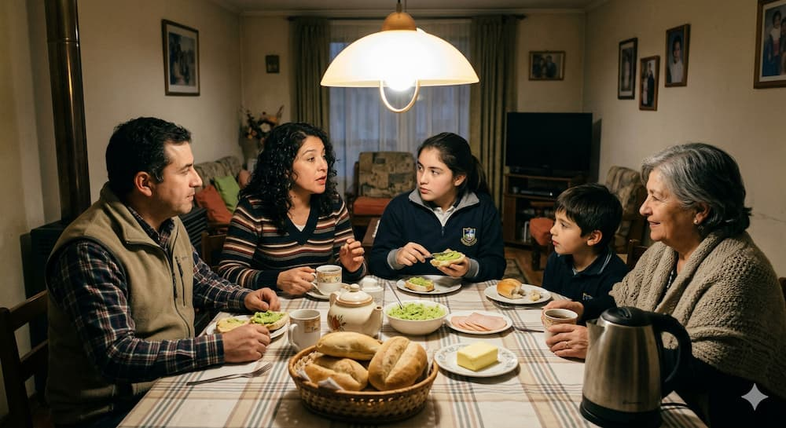
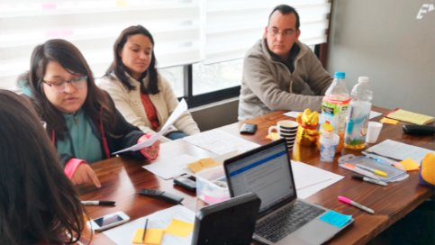

Investigación y Estrategia de Servicio
- Investigación Etnográfica (En terreno)
- Mapeo de Actores y Perfiles
- Customer Journey Mapping
- Service Blueprinting
- Pruebas de Usabilidad
- Design Thinking.
Diseñadora de Experiencias y Docente con sólida trayectoria en la articulación de ecosistemas digitales y sociales. Me especializo en conectar la investigación estratégica, el diseño UX/UI y la educación para transformar plataformas complejas en soluciones humanas y eficientes. Con una visión orientada al Diseño de Servicios, lidero procesos end-to-end que integran las necesidades de las personas con los objetivos de negocio y la factibilidad técnica. Mi perfil combina la capacidad operativa en desarrollo Frontend con la visión estratégica necesaria para mejorar la calidad de vida a través de la tecnología y la innovación.
Mi enfoque se centra en visibilizar y conectar todos los actores, procesos y tecnologías para entregar valor sostenible. Soy la facilitadora que alinea:
Mi experiencia se ha centrado en la investigación estratégica, el diseño de servicios y la facilitación del conocimiento.
DUOC UC
Enseño y facilito el aprendizaje en áreas clave: UX Design, UI, UX Research, HTML y CSS. He desarrollado contenido especializado en Arquitectura de la Información para asignaturas full online, garantizando la claridad educativa digital. Soy investigadora y observadora en el equipo de innovación "IdearlA" y mi práctica docente integra activamente metodologías de Diseño de Servicios.
Proyecto Independiente
Lideré la investigación end-to-end con adolescentes y especialistas para diseñar un habilitador digital (MVP web) y protocolos de contenido centrados en la seguridad y la confianza para la prevención del abuso sexual infantil.
[HITO ACTUAL]: Actualmente, estoy potenciando la sostenibilidad y escalabilidad tecnológica del proyecto como becaria del programa INNPULSA MUJER STEM (impulsado por Mujeres del Pacífico, CORFO y Open Beauchef de la Universidad de Chile), donde utilizo el Laboratorio de Innovación (i-Lab) para iterar el modelo de negocio y el servicio omnicanal.
Scala Learning – Universidad del Desarrollo
Facilité el aprendizaje estratégico de futuros diseñadores en la adquisición de habilidades prácticas y teóricas para su inserción en la industria tecnológica.
Desafío Latam
Guié la transformación profesional de estudiantes del Bootcamp UX/UI, combinando empatía y pensamiento estratégico. Entregué las herramientas prácticas y la dedicación necesaria para que rediseñaran sus trayectorias laborales con impacto y propósito.
GL Group
Fui la primera diseñadora UX/UI de la organización, encargada de unificar la experiencia visual y funcional de todos los servicios Cloud de la empresa. Mi enfoque integral facilitó la adopción y la coherencia de productos técnicos complejos.
Continuum
Ejecuté procesos completos de experiencia de usuario para clientes Fintech, incluyendo el rediseño crítico del sistema MPOS de Transbank. Realicé estudios etnográficos en terreno para profundizar en el comportamiento transaccional real.
Proyecto Independiente
Fusioné mi perfil audiovisual con el diseño estratégico en proyectos freelance. Creé talleres de audiovisual para infancias y adolescencias y facilité cursos de emprendimiento para mujeres, etapa donde comencé a idear el concepto inicial de "Creo en ti".
Falabella.com
Aquí comenzó mi curiosidad por el mundo digital. Gestioné y optimicé el flujo de activos visuales para un e-commerce de alto tráfico, administrando servidores de contenido (Adobe Scene 7) y optimizando los procesos de producción visual.
SHIFTA by Elisava
SHIFTA by Elisava
Universidad del Desarrollo
Universidad del Desarrollo
Certiprof
Laboratoria
Laboratoria
Laboratoria
Fundación Para la Confianza
IP Santo Tomás
Explora mis casos de estudio, investigaciones y desarrollos. Haz clic en cada tarjeta para ver el documento detallado del proyecto.

Investigación y diseño omnicanal para la prevención del abuso infantil. Proceso end-to-end escalado hacia un modelo de negocio potenciado hoy por INNPULSA MUJER STEM.

Visibilización de necesidades invisibles y diseño de soluciones de alto impacto emocional y operativo, a partir del levantamiento cualitativo de perfiles e insights.

Investigación antropológica para decodificar comportamientos financieros. Levantamiento profundo de perfiles de usuario que sentó las bases para la creación de la tarjeta digital Tenpo.
Renovación completa de la experiencia e interfaz de usuario para un sistema de pago crítico. Unificación visual y funcional orientada a maximizar la eficiencia operativa.

Auditoría heurística y de accesibilidad digital para garantizar un servicio equitativo e inclusivo. Proceso documentado estratégicamente en Notion.
Desarrollo de material instruccional y educativo de alto nivel para formar a la próxima generación de profesionales del diseño con una visión integral y estratégica.